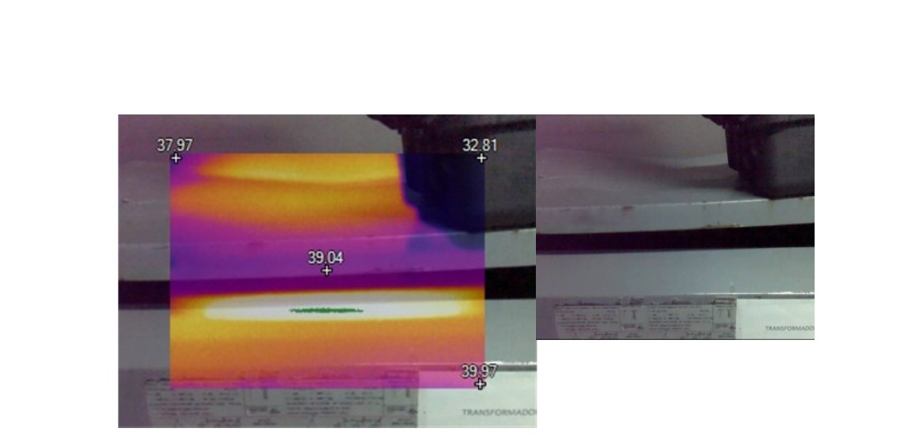
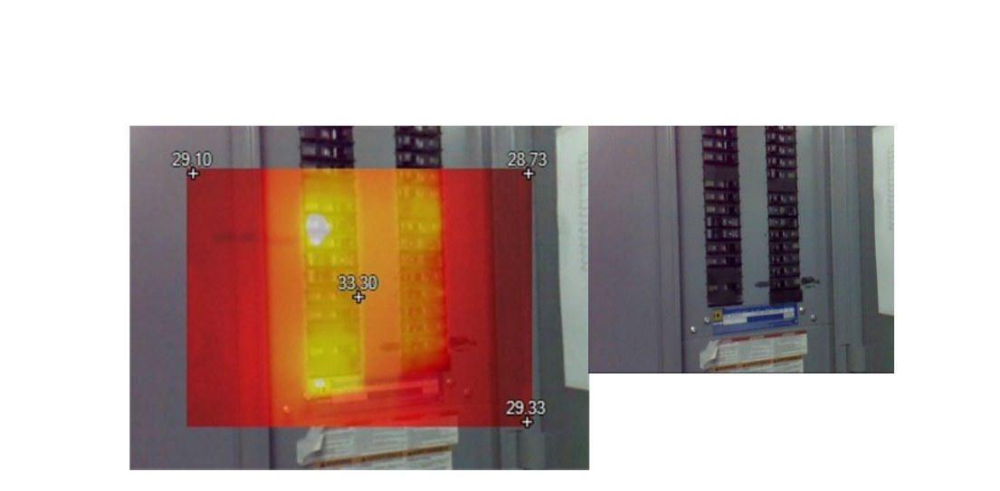
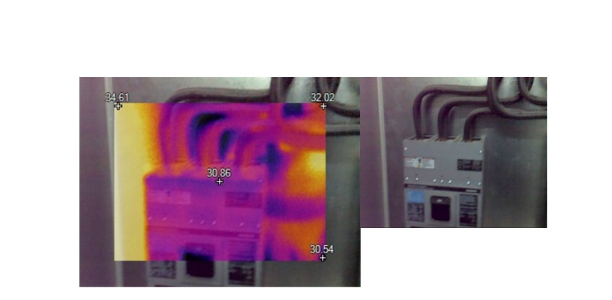

INTEGR
Ingeniería e Integración de Sistemas Eléctricos
Estudio de Termografía Eléctrica
Folio: INTG-TG-001
Fecha: 15/12/2018
| Clave | Instrumento | Marca / Modelo | No. Serie | Rango calibración | DSP / Versión |
|---|---|---|---|---|---|
| CM-01 | Cámara Termográfica Infrarroja | Fluke TiS65 | TiS65-16121347 | -20 °C a 80 °C | 6.0.86 |
| SW-01 | Software de análisis termográfico | Fluke SmartView | — | — | — |
| Parámetro | Valor / Descripción |
|---|---|
| Fecha de inspección | 15 de diciembre de 2018 |
| Sitio de inspección | Av. Las Torres 2111, Col. Lote Bravo, Local Subancla 4, C.P. 32575, Chihuahua, Chih., México |
| Voltaje de instalación | 480 V / 220 V — Sistema trifásico 3Ø 4 hilos 60 Hz |
| Cámara termográfica | Fluke TiS65 — Resolución de detector: 260 × 195 px |
| No. de serie de cámara | TiS65-16121347 — DSP: 6.0.86 |
| Emisividad configurada | ε = 1.00 (superficies no metálicas / aislamiento) |
| Temperatura de fondo (ambiente) | 20.5 °C |
| Rango de calibración de la cámara | -20 °C a 80 °C |
| Responsable de la inspección | Ing. Sixto Gallegos |
| Elaboró | Saúl Villalobos — INTEGR |
El presente reporte documenta los resultados de la inspección termográfica infrarroja realizada en las instalaciones eléctricas del sitio indicado, con el propósito de identificar puntos calientes, conexiones deficientes, sobrecargas eléctricas y cualquier anomalía de temperatura que pueda representar un riesgo de falla, incendio o accidente eléctrico.
La termografía infrarroja es una técnica de mantenimiento predictivo no invasiva que permite detectar diferencias de temperatura (ΔT) en componentes eléctricos bajo condiciones normales de operación, sin interrumpir el servicio. La detección temprana de anomalías térmicas reduce el riesgo de fallas inesperadas y permite programar acciones correctivas con anticipación, en cumplimiento con lo establecido en la NOM-022-STPS-2015 sobre condiciones de seguridad eléctrica en los centros de trabajo y la NFPA 70E-2018.
La inspección termográfica cubrió los siguientes componentes y sistemas eléctricos del sitio:
| Norma / Estándar | Descripción y aplicación |
|---|---|
| NOM-022-STPS-2015 | Condiciones de seguridad eléctrica en los centros de trabajo — establece los requisitos de mantenimiento preventivo y predictivo para instalaciones eléctricas, incluyendo la termografía como técnica aplicable. |
| NFPA 70E-2018 | Standard for Electrical Safety in the Workplace — proporciona los criterios de clasificación de severidad por diferencia de temperatura (ΔT) y los procedimientos de seguridad durante la inspección termográfica. |
| ASTM E1934 | Standard Guide for Examining Electrical and Mechanical Equipment with Infrared Thermography — define los procedimientos de inspección, condiciones de medición, documentación de imágenes y criterios de evaluación. |
| ISO 18434-1:2008 | Condition monitoring and diagnostics of machines — Thermography — Part 1: General procedures. Establece los requisitos generales para el monitoreo de condición mediante termografía infrarroja en maquinaria y equipos eléctricos. |
| NOM-001-SEDE-2012 | Instalaciones Eléctricas de Utilización — define los límites permisibles de temperatura en conductores, interruptores y tableros, así como los requisitos de capacidad y sección para conductores según su carga. |
Para la inspección termográfica se utilizó el siguiente equipo de medición certificado:
| Software | Función | Proveedor |
|---|---|---|
| Fluke SmartView | Análisis de imágenes IR, extracción de datos de temperatura, generación de reportes termográficos | Fluke Corporation |
La clasificación de severidad de cada anomalía térmica se determina con base en la diferencia de temperatura (ΔT) entre el componente inspeccionado y la temperatura de referencia (temperatura ambiente o componente similar en condición normal):
| ΔT (°C) | Clasificación | Nivel de severidad | Acción recomendada |
|---|---|---|---|
| < 1 °C | Normal | Sin anomalía | Sin acción requerida. Continuar monitoreo rutinario. |
| 1 – 10 °C | Posible deficiencia | Nivel 1 — Bajo | Monitorear periódicamente. Registrar para tendencia. Inspección en próximo mantenimiento. |
| 10 – 20 °C | Deficiencia probable | Nivel 2 — Moderado | Programar reparación en corto plazo. Revisar conexiones, apriete de bornes y carga del circuito. |
| 20 – 40 °C | Deficiencia | Nivel 3 — Alto | Reparar a la brevedad posible. Riesgo significativo de falla y potencial incendio. |
| > 40 °C | Deficiencia crítica | Nivel 4 — Crítico | Reparar de inmediato. Considerar desenergizar el equipo. Riesgo inminente de falla catastrófica. |
A continuación se presentan los resultados consolidados de las 8 mediciones termográficas realizadas durante la inspección:
| # | Componente inspeccionado | ID Imagen | Hora | Temp. máx. (°C) | ΔT (°C) | Clasificación |
|---|---|---|---|---|---|---|
| 1 | Transformador Square D 225 kVA | IR_00013 | 19:51:49 | 40.0 | 19.5 | Deficiencia probable |
| 2 | Tablero derivado — interruptores | IR_00012 | 19:51:38 | 29.2 | 8.7 | Posible deficiencia |
| 3 | Tablero principal — punto caliente | IR_00011 | 19:51:22 | 33.3 | 12.8 | Deficiencia probable |
| 4 | Tablero — panel de interruptores | IR_00010 | 19:51:13 | 32.5 | 12.0 | Deficiencia probable |
| 5 | Conductores internos tablero | IR_00007 | 19:50:17 | 32.2 | 11.7 | Deficiencia probable |
| 6 | Interruptor principal y conductores | IR_00006 | 19:50:09 | 34.6 | 14.1 | Deficiencia probable |
| 7 | Interruptor y acometida de cables | IR_00005 | 19:50:00 | 33.1 | 12.6 | Deficiencia probable |
| 8 | Interruptor principal Square D | IR_00004 | 19:49:50 | 30.8 | 10.3 | Deficiencia probable |
A continuación se presenta el registro completo de imágenes termográficas con los datos de medición asociados a cada toma:








Los siguientes hallazgos representan las anomalías de mayor relevancia identificadas durante la inspección. Se documentan con su imagen de referencia, nivel de severidad y acciones recomendadas:
Con base en los resultados de la inspección termográfica se emiten las siguientes observaciones y recomendaciones de mantenimiento:
La inspección termográfica realizada el 15 de diciembre de 2018 en las instalaciones eléctricas de Av. Las Torres 2111, Local Subancla 4, Chihuahua, Chih., México, identificó anomalías térmicas en los 8 componentes inspeccionados. De las mediciones realizadas, 7 clasifican como Deficiencia Probable (ΔT 10–20 °C) y 1 como Posible Deficiencia (ΔT 1–10 °C), de acuerdo con los criterios de la NFPA 70E-2018.
El componente con mayor temperatura fue el Transformador Square D 225 kVA (IR_00013), con ΔT = 19.5 °C, en el límite superior de la clasificación de Deficiencia Probable, lo que requiere atención en el corto plazo. En los tableros eléctricos y conductores se identificaron puntos calientes consistentes que indican la presencia generalizada de conexiones con resistencia de contacto elevada, conductores con posible insuficiencia de calibre y/o condiciones de sobrecarga.
No se identificaron deficiencias críticas (ΔT > 40 °C) ni deficiencias de nivel 3 (ΔT 20–40 °C) que requieran acción inmediata o desenergización de emergencia. Sin embargo, la acumulación de deficiencias de nivel moderado en múltiples componentes es indicativa de un sistema que requiere mantenimiento preventivo integral para evitar el deterioro progresivo y la eventual falla de los equipos.
Se recomienda implementar las acciones correctivas señaladas en la Sección 10 de este reporte, con prioridad en el mantenimiento del tablero principal y la revisión del transformador, y programar una re-inspección termográfica en un plazo no mayor a 6 meses para validar la efectividad de las correcciones realizadas.